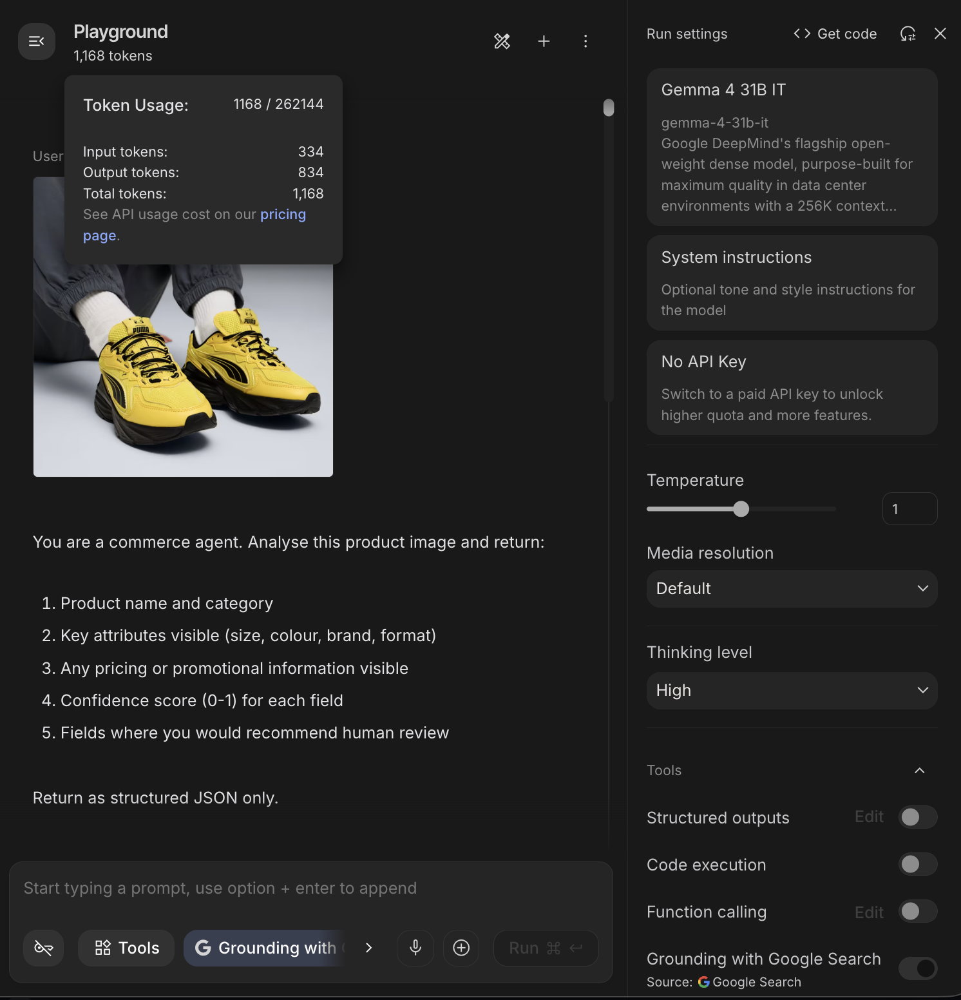
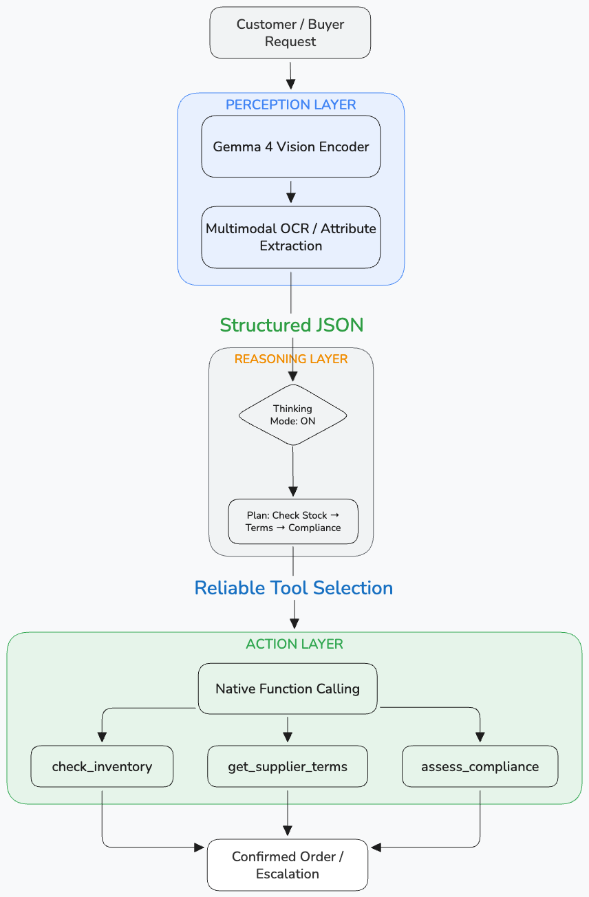

The promise of agentic commerce has always been the same: an AI that doesn't just recommend, it acts. It reads a product image, checks inventory, negotiates terms, and places the order. The problem hasn't been the vision. It's been the model. You needed multimodal understanding, reliable function-calling, structured output, and something you could actually deploy in a regulated enterprise environment without your legal team shutting it down.
Gemma 4 dropped on 2 April 2026. It's the most enterprise-ready open model for this use case yet, and it's Apache 2.0.I've been building a multi-protocol agentic commerce POC (supporting UCP, ACP, and MCP) at VML. Here's what Gemma 4 changes, what I tested hands-on in Google AI Studio, and what it means for the full ecommerce stack, from the device in a customer's pocket to the procurement system in the back office.
Why Ecommerce Is the Perfect Domain for Gemma 4
Before we get into the architecture, it's worth stepping back to understand why Gemma 4 and ecommerce are a particularly strong fit. Most AI model coverage focuses on cloud deployments and enterprise back-office workflows. That's only half the ecommerce picture.
The ecommerce stack spans two very different environments, and Gemma 4 is one of the first open model families designed to serve both:
On-device (E2B and E4B models):This is where the customer experience lives, and it's where small model capability matters most. Consider what a shopper's phone can now do locally, without any data leaving the device, without any API call, without any latency from a round-trip to the cloud:
- Visual product search: point a camera at a product or take a photo, and the model identifies it, finds similar items, and surfaces relevant results, entirely on-device
- Personalised recommendations: inference runs locally against a user's browsing and purchase context, meaning recommendations are generated without sending behavioural data to a server
- Image-based size and fit analysis: a customer uploads a photo; the model analyses dimensions and attributes locally and suggests the right size or variant
- Accessibility features: real-time audio descriptions of products for visually impaired shoppers, running offline with no external dependency
- In-store price and label scanning: a retail associate points their device at a shelf; the model reads labels, identifies products, and surfaces inventory data instantly
- Multilingual shopping assistance: 140+ languages natively supported, meaning a tourist shopping in a foreign-language store gets real-time translation and product context without an internet connection
The critical point here is customer data safety. When inference runs on-device, purchase history, browsing behaviour, and personal preferences never leave the customer's hardware. This is a genuine architectural advantage over cloud-only approaches, particularly as data privacy regulations tighten across the EU, UK, and beyond. For retailers, it also reduces cloud inference costs at scale.
Cloud and enterprise (26B MoE and 31B Dense models):This is where agentic workflows run: procurement automation, supplier negotiation, inventory management, compliance review, catalogue intelligence. These workflows require deep reasoning, large context windows (up to 256K tokens, enough to fit an entire supplier contract), and reliable function-calling against enterprise APIs.
What Gemma 4 uniquely enables is a single model family that spans both environments with native multimodality, consistent function-calling behaviour, and one licence (Apache 2.0) that legal teams in regulated sectors will actually approve.
This is the ecommerce AI architecture from a Google technology perspective.
What Agentic Commerce Actually Needs From a Model
Commerce agents don't just converse, they transact. That requires multimodal input (product images, receipts, catalogues), reliable structured output (not "close enough" JSON), multi-step planning across tool calls, and low-latency responses at the edge (in-store, mobile POS, field sales).
In plain language: agentic commerce isn't just AI applied to shopping, it's commerce workflows that run themselves. Think of the difference between a sat-nav that suggests a route (assistant) versus a self-driving car that drives it (agent). The agent perceives, decides, and acts. Gemma 4 is one of the strongest open models capable of doing all three on hardware you control.
A commerce agent needs to operate across three layers:
- Perception layer: understand what it's looking at (product, document, image)
- Reasoning layer: plan a multi-step workflow across tools and APIs
- Action layer: reliably execute via structured function calls with verifiable output
Previous open models forced a choice: small + fast (weak reasoning) or large + capable (can't deploy at edge). The Gemma 4 family, with edge-optimised E2B/E4B, 26B MoE, and 31B Dense variants, is a strong contender for spanning both tiers without sacrificing native multimodality or function-calling.
What makes Gemma 4 particularly significant for enterprise is that it solves what I'd call the Three L's of enterprise AI adoption:
- Legal: Apache 2.0 removes the licensing risk that blocked regulated sectors from committing to previous Gemma versions
- Logic: configurable thinking mode enables deep multi-step reasoning for high-stakes decisions
- Latency: the MoE/Dense split means you can match model tier to workflow speed requirements
Previous Gemma versions carried a custom Google licence with potential termination risks and commercial restrictions. Apache 2.0 removes that blocker, enabling air-gapped, sovereign cloud, or fully on-premises deployments. Let's look at what Gemma 4 specifically brings to each of the three architecture layers.

The Perception Layer: Multimodal That Commerce Can Actually Use
Gemma 4 brings native multimodality across the entire family. All models support image input with variable aspect ratios and configurable token budgets, what I call Elastic Perception. You can allocate ~70 tokens for a quick SKU barcode scan on a mobile POS, or scale to 1,120 tokens for a complex invoice OCR or dense product catalogue page. The same model handles both without needing separate pipelines.
Video input is supported on the larger models (26B and 31B), useful for in-store camera feeds or product demo analysis. The edge models (E2B and E4B) add native audio input for speech recognition and translation, perfect for warehouse voice-picking, in-car ordering, or field sales dictation, without an external ASR pipeline.
Additional capabilities include improved object detection, OCR (including fine print and multilingual text), screen and UI understanding, and bounding box output for product identification in visual agents. Bounding box outputs are returned in normalised [ymin, xmin, ymax, xmax] format scaled 0–1000, making them resolution-agnostic and straightforward to overlay on UI elements regardless of the source device's aspect ratio.
Why AI Studio for this test?AI Studio gives direct access to per-request token usage data, which local runners (Ollama, llama.cpp, LM Studio) don't expose cleanly. For understanding Gemma 4's visual token budget behaviour in practice, that granularity matters. Local runners are better suited to latency benchmarking on specific hardware; AI Studio is the right tool for model-level capability and token economics analysis. The Vertex AI and ADK hands-on comes in the next article in this series.
Hands-on test: gemma-4-31b-it in Google AI Studio I fed a packaged consumer product image with this prompt:You are a commerce agent. Analyse this product image and return:
1. Product name and category
2. Key attributes visible (size, colour, brand, format)
3. Any pricing or promotional information visible
4. Confidence score (0-1) for each field
5. Fields where you would recommend human review
Return as structured JSON only.
The token usage data from AI Studio confirmed this precisely. For a high-resolution product catalogue scan, I observed 1,168 total tokens (334 input + 834 output) on the 31B model. This breaks down as: 1,120-token visual budget plus approximately 48 tokens of overhead for learned 2D position embeddings. That ~48-token overhead is worth understanding: it's what allows the model to treat a receipt as "tall and skinny" rather than a square block of pixels, preserving OCR line-integrity for vertical formats. On the 26B MoE, the same task consumed 814 total tokens (325 input + 489 output), reflecting the MoE's more efficient routing with a smaller but still highly capable output.


{
"product_name": "Puma x Pokémon Pikachu Sneakers",
"category": "Footwear / Sneakers",
"key_attributes": {
"size": null,
"colour": "Yellow and Black",
"brand": "Puma",
"format": "Pair"
},
"pricing_promotional_info": null,
"confidence_scores": {
"product_name_category": 0.9,
"key_attributes": 0.98,
"pricing_promotional_info": 1.0
},
"human_review_recommended": [
"product_name",
"size"
]
}
In a commerce context, Elastic Perception enables:
- Voice-first interactions and speech-to-translated-text for multilingual customer service
- Local image and video understanding for product scanning, receipt processing, and in-store feeds
- Object detection, OCR, and screen understanding for navigating supplier portals autonomously
All of this runs locally. No sensitive product images, supplier documents, or customer voice recordings need to leave your network.
The Reasoning Layer: Thinking Mode and Multi-Step Planning
Gemma 3 relied on a single forward pass. For multi-step commerce workflows, check stock, verify supplier terms, validate compliance, place order, that's insufficient.
Gemma 4 introduces Reasoning on Demand: configurable thinking mode with extended reasoning tokens. The enterprise framing matters here: a £50k procurement contract justifies the latency of a full think block; a simple POS lookup does not. This isn't a limitation, it's an architecture decision you control per call.
Why did the benchmark improvements happen? Two factors working together. First, training data and recipe: the 31B core architecture isn't dramatically different from Gemma 3's 27B; the leap is primarily a training improvement, which means it's stable and reproducible rather than a one-off architectural gamble. Second, the<|think|> token space: the model can simulate tool outputs mentally before committing to an actual API call, a mental sandbox. It reasons through what check_inventory will return, anticipates the get_supplier_terms follow-up, then executes the correct sequence with confidence. This is what makes the agentic benchmark improvements so dramatic, it's not just better text generation, it's better planning.
In my POC, thinking mode measurably improved tool selection and sequencing reliability, especially when routing across protocols (UCP/ACP/MCP).
The latency trade-off in numbers: AI Studio doesn't expose raw latency directly, but token output volume tells a comparable story. On the same procurement reasoning task, the 31B Dense produced 834 output tokens versus the 26B MoE's 489. On typical hardware, this translates to a meaningful latency difference that architects need to factor into UX design: when to show a loading indicator versus returning a synchronous response. As a rule of thumb, thinking ON is appropriate for decisions above a value threshold you define; thinking OFF suits real-time interactions where response speed matters more than depth. Commerce workflow:
The Action Layer: Native Function Calling That Enterprise Teams Can Trust
Gemma 3 needed heavy prompt engineering to coax structured tool use. Gemma 4 trains function calling from the ground up, optimised for multi-turn agentic flows with multiple tools.
Critically, Gemma 4 adds native system prompt support: agent persona and guardrails are baked into the KV cache more efficiently than previous instruction-tuning workarounds. For enterprise governance, this means cleaner separation between agent configuration (managed by platform teams) and runtime requests (generated by business logic). Auditability improves as a direct result.
Hands-on test: system prompt and tool schemaSYSTEM PROMPT:
You are a procurement agent for an enterprise retail organisation.
Your available tools are check_inventory and get_supplier_terms.
Always check inventory before retrieving supplier terms.
Return structured JSON with a confidence score and reasoning.
Never place an order, return a recommendation only.
tools = [
{
"name": "check_inventory",
"description": "Check product availability and current stock levels",
"parameters": {
"type": "object",
"properties": {
"product_id": {"type": "string"},
"quantity_requested": {"type": "integer"},
"warehouse_region": {"type": "string"}
},
"required": ["product_id", "quantity_requested"]
}
},
{
"name": "get_supplier_terms",
"description": "Retrieve supplier pricing and lead times for a product",
"parameters": {
"type": "object",
"properties": {
"product_id": {"type": "string"},
"supplier_id": {"type": "string"}
},
"required": ["product_id"]
}
}
]
USER PROMPT:
A buyer has requested 500 units of SKU-8821 for delivery to the UK
warehouse within 14 days. Assess whether this is feasible and
recommend next steps.
check_inventory first, chained to get_supplier_terms correctly in most runs, and returned parseable JSON. Thinking mode improved recommendation quality and reduced unnecessary tool calls.
Type handling test: When asked for "half a thousand units" rather than "500", the 31B returned 500 as an integer in the function call, correct behaviour. The 26B MoE handled the quantity conversion correctly too, but on the same complex chain it twice attempted to call get_supplier_terms in parallel with check_inventory, rather than strictly following the "check inventory first" instruction in the system prompt. For high-stakes logic where sequence is a legal or financial requirement, the Dense model remains the safer choice.
One honest failure: During a stress test with a highly stylised, cursive "Limited Edition" label on a vintage-style beverage bottle, the model hallucinated a promotional discount ("20% off") that wasn't present, likely triggered by the visual starburst shape common in discount stickers. The model was pattern-matching graphic design intent rather than reading actual text. This is an important production caveat: OCR accuracy on standard product labels is strong, but spatial reasoning about the intent of graphic design elements still requires a human-in-the-loop for high-accuracy cataloguing work.
Enterprise reliability note: Trained-in function calling reduces schema hallucination compared to prompted approaches, but always validate output at the application layer. Agentic reliability is a shared responsibility between the model and your orchestration code.
Deployment: Where Gemma 4 Fits in an Enterprise Commerce Stack
Model selection should map to use case and hardware reality:
| Use Case | Model | Approx. Memory | Context | Why |
|---|---|---|---|---|
| Mobile POS / in-store scanning | E2B | ~1.5–3 GB | 128K | Offline, audio + vision, battery-efficient |
| Field sales / voice-first agent | E4B | ~3–5 GB | 128K | Stronger reasoning + audio, on-device |
| Product catalogue understanding | 26B MoE | ~14–16 GB active | 256K | Fast inference (3.8B active), strong OCR |
| Supplier negotiation / high-stakes | 31B Dense | ~60+ GB (bf16) | 256K | Max reasoning quality, full thinking mode |
| Compliance / contract review | 31B Dense | ~60+ GB (bf16) | 256K | 256K fits entire contracts in one prompt |
The right starting point depends on what you're trying to do. Here's the honest breakdown:
| Goal | Best Entry Point | Why |
|---|---|---|
| Prototype and explore | Google AI Studio | Instant access, no setup, token usage visible |
| Experiment with notebooks | Kaggle | Free GPU quota, Gemma 4 available day one |
| Run locally on your machine | Ollama (ollama pull gemma4:27b) | Fastest local setup, good for latency testing |
| Build an agent with tools | ADK + Vertex AI | Full agent lifecycle, tool registration, production-ready |
| Deploy to production | Vertex AI Model Garden | Managed endpoints, fine-tuning, enterprise security |
| Fine-tune on your data | Vertex AI Training Clusters | Optimised SFT recipes via NeMo Megatron |
| Edge / Android deployment | AI Edge Gallery | E2B/E4B via AICore Developer Preview |
Each of these deserves its own deep-dive from a commerce perspective. That's what this series is building toward.
Deploying on Google Cloud: End-to-end guide: Fine-tuning and serving Gemma 4 on Vertex AI:gcloud ai model-garden models deploy \
--model=google/gemma4@gemma-4-31b
From there, enterprise security layers (Workload Identity Federation, Cloud DLP, Secret Manager) are additive. You're not rebuilding from scratch.
Apache 2.0 and data sovereignty: Zero data has to leave your company's network perimeter. For commerce specifically, no customer purchase history, supplier pricing terms, or inventory figures touch an external API. That's not just a compliance checkbox, it's a meaningful competitive advantage in regulated sectors. The split-role architecture: a POC observationThis is where benchmarks stop and production reality begins. In building the multi-protocol server (UCP/ACP/MCP), I found that the 26B MoE and 31B Dense aren't interchangeable, they serve different roles in the same pipeline.
26B MoE excels at real-time protocol interactions: price lookups, availability checks, UCP session initiation. These interactions have tight timing requirements. Critically, the 31B Dense can be too slow for certain UCP protocol handshakes, the timeout expires before the model responds. This isn't a model weakness, it's a latency constraint that makes a multi-model strategy architecturally necessary rather than optional. 31B Dense handles commitment reasoning: evaluating supplier terms, assessing compliance, making the actual procurement decision where depth of reasoning matters more than response speed.The practical pattern:
> MoE for protocol handshakes, Dense for commitment decisions. In building the multi-protocol server (UCP/ACP/MCP), I found that the 31B Dense can be too slow for certain UCP protocol handshakes — the timeout expires before the model responds. This isn't a model weakness, it's a latency constraint that makes a multi-model strategy architecturally necessary rather than optional. No model card will tell you this. It comes from running the protocol.
This is the kind of production nuance that rarely appears in model announcement blogs. If you're designing a commerce agent pipeline, plan for model selection at the workflow step level, not the system level.
Where everything fits together:- Gemma 4: the engine, perception, reasoning, structured output
- ADK: the gearbox, agent lifecycle, tool registration, multi-agent coordination
- UCP/ACP/MCP: the transmission, enterprise integration patterns
MCP specifically is what allows Gemma 4 to see live data. Without it, the agent is reasoning in a vacuum. Gemma 4 generates the structured output that UCP requires, the model capability and the commerce protocol are co-dependent.

What's Still Not Solved
Gemma 4 advances the model layer significantly, but agentic commerce has unsolved problems that are architecture and platform challenges, not model limitations:
- Orchestration at scale: managing hundreds of concurrent agents across SKUs, suppliers, and markets is an orchestration problem, not a model problem. Gemma 4 is the reasoning core inside an agent; the agent itself is built with ADK, with Gemma 4 handling perception, planning, and structured output at each step. Coordinating many such agents reliably is the hard part.
- Agent memory and session context: procurement negotiations can span days. Cross-session context management is unsolved at the model level.
- Multi-agent coordination: specialist agents (inventory, compliance, finance) working together reliably requires a coordination layer above the model. This is where ADK becomes essential: it handles agent lifecycle, inter-agent messaging, and tool registration across a fleet. Vertex AI adds the managed infrastructure to run that fleet at enterprise scale.
- Evaluation and observability: how do you know your commerce agent is making good decisions at scale? Agentic evaluation frameworks are still early-stage, though Vertex AI's Gen AI Evaluation Service is a useful starting point for measuring output quality across tool-calling flows.
These are the natural topics for the articles ahead in this series.
Conclusion: The Foundation Is Ready
→ Gemma 4 solves the Three L's of enterprise AI: Legal (Apache 2.0), Logic (thinking mode), and Latency (MoE/Dense split)
→ On-device models (E2B/E4B) enable private, low-latency ecommerce experiences: visual search, personalised recommendations, and image analysis without customer data leaving the device
→ The three-layer model (perception, reasoning, action) maps directly to how commerce agents should be architected
→ Elastic Perception (configurable token budgets) means one model handles barcode scans and dense invoice OCR without separate pipelines
→ The MoE/Dense split isn't just a performance choice, it's architecturally necessary for protocols with timing constraints
→ The model layer is largely solved. Orchestration, memory, and evaluation are where the real architecture work begins
This is the first in the Agentic Commerce series, exploring how Google technology specifically enables the next generation of ecommerce and retail AI from a Google tech perspective.
In the next article, I'll be exploring Gemma 4 with ADK on a Cymbal Store demo, moving from model capability to full agent orchestration in a realistic retail scenario. If you're building agentic commerce systems, that's where the architecture gets interesting.
Follow the Agentic Commerce series for deeper dives. Tag me or comment below with your experiences deploying open models in commerce. I'd particularly like to hear from anyone running on-device inference or multi-model strategies in production.